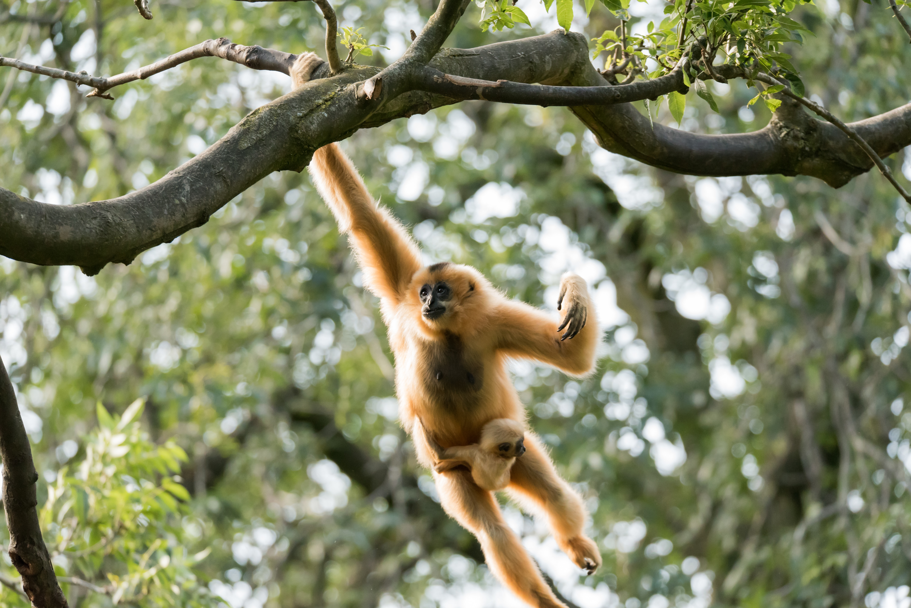
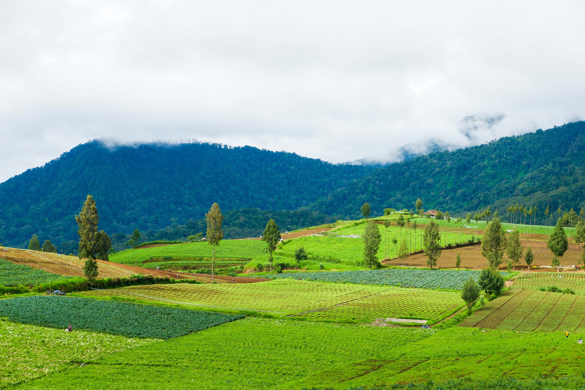

GIS techniques not only allow us to understand which species and habitats need protecting, they empower us with the skills to determine the best course of action to do so.
Species Tracking and Inventories
Databases are built and implemented in geographic information systems to accumulate species data all over the world. They allow researchers to study how well or how poorly a given population is doing over time and space. GIS data scientists and analysts maintain species inventories for future studies, such as work in the spatial analysis field. The tracking of species throughout migration patterns and daily activity is made possible through spatial analysts. Inventories, GPS location data and habitat characteristics allow us to follow species from afar, ultimately allowing us to better understand their behaviors and needs for conservation.
There are many phenomenal organizations implementing these skills to better understand wildlife across the world, us included!


